Compliance
Compliance
is a term in elasticity that relates strain to stress and
is the inverse of stiffness which relates stress to strain.
Compliance is often used in seismological literature to
indicate that
measurements of fluid pressure and elastic displacements at a
fluid-solid boundary can be used to infer the material
properties of
the elastic medium. Such measurements are made at the Earth's
surface and also at the ocean seafloor where a "seafloor
compliance" is estimated.
Initial
studies of compliance were were directed toward understanding the
effect of atmospheric pressure changes on recordings of long
period
seismometers. It was recognized that the pressure changes caused
displacements and tilts that affect recordings. Sorrells
(1971) provided the theoretical background for the solid
deformation of a
halfspace. Subsequent papers addressed a multilayered elastic
medium
(Sorrells et al, 1971 ; Sorrells and Goforth, 1973).
A recent study by Tanimoto
and Wang (2019) reviews
work by these and other authors and provides details on the
determination of compliance for layered media and on data
processing.
Wang and Tanimoto (2020) applied these techniques to estimate
near-surface rigidity for a
subset of USArray Transportable Array stations in the United
States
having co-located ground motion and pressure sensors. Crawford
et al (1991), Crawford et al (1998)
and Crawford (2002) address the case of observations on the
seafloor to relate seafloor
compliance to seafloor structure.
The
difference between observations on the surface and the seafloor is
related to the phase velocity of
the
pressure perturbation acting as the source. At the surface the
source
is the wind which has phase
velocities
on the order of a few
while on the seafloor infragravity waves with phase velocities on
the
order of provide the
signal.
Since the research papers emphasize measurements at frequencies
less then about 0.05 Hz, the surface measurements and seafloor
measurements are sensitive to the upper 10's and 1000's of meters
of
the elastic structure, respectively.
One
must be careful in modeling observations. Tanimoto
and
Wang (2019)
use vertical compliance, 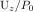
, while Crawford
et al (1998)
use a wavenumber normalized vertical compliance, 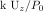
.
We
follow Tanimoto
and Wang (2019)
to compute partial derivatives of the compliance with
respect to
changes in material properties for an initial layered
halfspace. Rather than using the vertical compliance, they
define a parameter 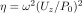 which is just the
ratio
of the power spectra of ground velocity to that of the
co-located
pressure. The sensitivity of this parameter to changes in
material
properties is written as
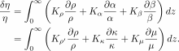
The
dimensionless partial derivative kernel with respect to
parameter is
defined as 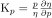
. The partials with
respect to
,
,
,
, and 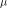 are obtained
keeping
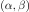
,
 ,
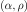
,
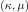
,
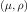
and
fixed, respectively. Thus
. The and are related to the
isotropic velocities by the definitions
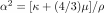
and 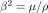
. Tanimoto
and
Wang (2019) also note that
,
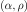
,
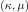
,
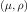
and
fixed, respectively. Thus
. The and are related to the
isotropic velocities by the definitions
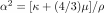
and 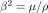
. Tanimoto
and
Wang (2019) also note that
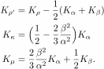
In
the program distributed here the
, and kernels
are
computed numerically and also through these relations. The user
has the choice of which to use.
Code
The compliance code
presented here is not part of the official Computer Programs in
Seismology distribution. For a given model, the codes provide the
compliance and kernels defined above. The package is contained in
the
file compliance.tgz . After
downloading this distribution, unpack and compile with the
commands
gunzip -c compliance.tgz | tar xf -
make tcompliance.saito
The syntax for running this program is given by
tcompliance.saito -h
which gives
Usage: tcompliance.saito -M model [-C cvel | -H depth] -F freq [-h]
-M model (default none) name of model file
-C cvel (default none) phase velocity (m/s)
-H depth (default none) water depth (m)
-F freq (default none) frequency
If -C is invoked it is assumed that measurements are at surface of solid Earth
If -H is invoked seafloor compliance is computed and dept is the height of the water column
-h (default none ) this help message
Note for the water problem, the model is all solid
since there is no propagation in fluid. The fluid
pressure is given theoretically
The model is in the Model96 format of Computer Programs in
Seismology and can be isotropic or transversely isotropic.
Note the compliance will be computed correctly for both
media, but the kernels are only valid for isotropic media, since κ
and μ have no meaning for VTI media.
Since this is a program to understand compliance and the various
kernels, the output is not tailored directly for inversion. The
details of the program output are given in
output.html.The output is easy to parse for use with a user
provided inversion code. Of course the output can be
reformatted by changing the various write statements.
Then run the two
test cases:
DOLAND
DOSEA
The program tcompliance.saito.f follows Tanimnoto and Wang
(2019) by using the numerical integration of minors introduced by
Takeuchi and Saito (1972) and Saito (1988).
Example 1
The script DOLAND computes the compliance and kernels for
a halfspace. It is assumed that the atmospheric pressure causes
the
surface deformation. Tanimoto and Wang (2019) show that the phase
velocity of the surface noise source is related to the
horizontal and vertical displacements through the relation 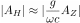
.
Tanimoto
and Wang (2018) discuss how to measure this velocity using
power
spectra of recorded displacements. The purpose of this
test case is
to compare these computations to those in Figure 8 of
Tanimoto and
Wang (2019). The visual comparison gives confidence in
this code.
The
model is a uniform halfspace with layer thickness varying
from 1 to
5 to 10 meters n the model. The
comparison is made for a phase velocity of 1 m/s and at a
frequency
of 0.01 Hz. The command line is
tcompliance.saito
-M HOMO3.5.mod -C 1 -F 0.01 > Land.txt
The kernels are given in the next figure
and
the text output is Land.txt
Example 2
This example addresses the problem of displacement and
pressure
measurements made at the seafloor. In this case the phase
velocity of
the pressure is that of oceanic gravity waves, which
is determined as a
function of the water depth, which is taken to be 1000 m in
this
example.
tcompliance.saito
-M HOMOSEA3.5.mod
-H
1000
-F 0.01 > Sea.txt
The
kernels are given in the next figure
and
the text output is Sea.txt.
References
Crawford,W.
C. 2004. The sensitivity of seafloor compliance
measurements to
sub-basalt sediments. Geophys. J. Int. , 157 (Jun),
1130–1145.
Crawford,
W. C., Webb, S. C., and Hildebrand, J. A. 1991.
Seafloor compliance
observed by long-period pressure and displacement
measurements. J
Geophys. Res. , 96 , 16151–16160.
Crawford,
W. C., Webb, S. C., and Hildebrand, J. A. 1998.
Estimating shear
velocities in the oceanic crust from compliance
measurements by
two-dimensional finite difference modeling.
J. Geophys. Res. , 103 , 9895–9916.
Saito, M. 1988. Disper80: A subroutine package for the
calculation of seismic normal mode
solutions. Pages 293–319 of: Doornbos, D. J. (ed),
Seismological Algoriths:
Computational Methods and Comptuer Programs. London:
Academic Press.
Sorrells,
long-period seismic noise and local fluctuations in
the
atmospheric pressure field. Geophys. J. Roy. Astr.
Soc. , 26 , 71–82.
Sorrells,
G. G., McDonald, J. A., Der, Z. A., and Herrin, E.
1971. Earth motion
caused by local atmospheric pressure changes. Geophys.
J. Roy. Astr.
Soc. , 26 (Sep), 83–98.
Sorrells,
G. G., and Goforth, T. T. 1973. Low-frequency earth
motion generated
by slowly propagating partially organized pressure
Fields. Bull.
Seism. Soc. Am , 63 , 1583–1601.
Takeuchi, H., and Saito, M. 1972. Seismic surface
waves. Pages 217–295 of: Methods in
Computational Physics, Volume 11: Seismology: Surface
Waves and Earth Oscillations.
New York: Academic Press.
Tanimoto,
T., and Wang, J. 2018. Low-frequency seismic noise
characteristics
from the analysis of co-located seismic and pressure
data. J. Geophys. Res.: Solid Earth , 123 (7),
5853–5885.
Tanimoto,
T., and Wang, J. 2019. Theory for deriving shallow
elasticity
structure from colocated
seismic and pressure data. J. Geophys. Res.: Solid
Earth , 124 (Jun),
5811–5835.
Wang,
J., and Tanimoto, T. 2020. Estimating near-surface
rigidity from
low-frequency noise
using collocated pressure and horizontal seismic data.
Bull. Seism.
Soc. Am. , 110 , 1960–1970.